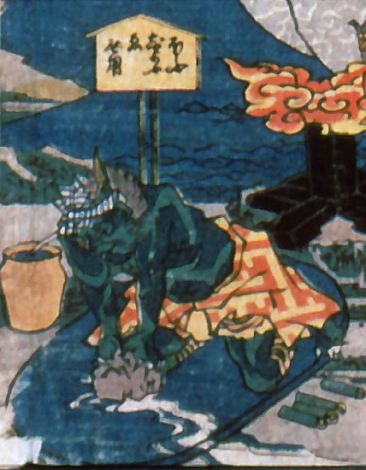

← 图鉴索引

大きな鏡を磨く緑の鬼。手ぬぐいを頭に巻いた、職人の出で立ちである。
著作者：歌川貞重／出典：親書誌：A5_pushkin_0033：教訓三界図会；キョウクンサンガイズエ／日付：2011／資源識別子：A5_pushkin_0033_0011_0000
Copyright (c)2010- International Research Center for Japanese Studies, Kyoto, Japan. All rights reserved.